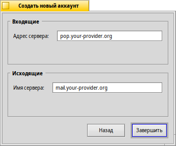
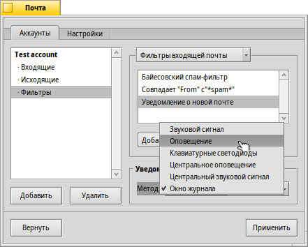

Русский
Русский Français
Français Deutsch
Deutsch Italiano
Italiano Español
Español Svenska
Svenska 日本語
日本語 Українська
Українська 中文 ［中文］
中文 ［中文］ Português
Português Suomi
Suomi Slovenčina
Slovenčina English
English| Индексация |
|
Creating a new e-mail account Account settings Setting up incoming e-mail Setting up outgoing e-mail Notifications and e-mail filters Setting up the Mail Service |
 Электронная почта (E-mail)
Электронная почта (E-mail)
| Расположение в Deskbar: | ||
| Расположение в Tracker: | /boot/system/preferences/E-mail | |
| Настройки хранятся по адресу: | ~/config/settings/Mail/* |
В Haiku включена система, которая регулярно доставляет электронную почту через почтовый сервис (также известный как mail_daemon) и сохраняет каждое письмо как один текстовый файл. Она анализирует письмо и заполняет его атрибуты всей необходимой информацией: от кого оно, к кому, тема письма и статус, что оно не прочитано, после чего эти данные становятся доступны вам и любому приложению. Также эта система позволяет легко менять почтовые клиенты, так как все данные и настройки остаются неизменными. Все параметры настраиваются в панели настроек электронной почты (E-Mail).
 Создание нового аккаунта электронной почты
Создание нового аккаунта электронной почты
Пройдем через весь процесс настройки аккаунта электронной почты.
Сперва нажмите на кнопку , чтобы создать новый аккаунт, при этом откроется панель, в которой необходимо заполнить ваши регистрационные данные:

First, you set how you get your mail, via or .
Теперь введите ваш Адрес электронной почты (E-mail address), Логин (Login name) и Пароль (Password), задайте Имя аккаунта (Account name), которое будет использоваться в Haiku, и ваше Реальное имя (Real name).
If your account is from a major e-mail provider, Haiku already knows all technical details like server IP addresses. If that is not the case, clicking will open another window to enter this information by hand:
You first set the Server name, Login type and Connection type for the incoming mail, below that for the outgoing mail. You should find the necessary information on your email provider's website.
See below for more info about the various settings and additional options.
Account settings
By selecting the name of an account in the left list, you can change some general settings:

The Account name is the name that's shown for example in the list of accounts in the E-mail preferences. Real name is the name someone sees when she gets mail from you. Return address is the email address that is used when someone replies to your mail. Normally that is the same address you've sent your email from.
If you'd like to use an email account to only send or only receive email, you can de/activate that usage by right-clicking the account's name in the leftside list to set the checkmarks accordingly.
More on setting up incoming e-mail
Кликните на под названием вашего аккаунта для настройки получения электронной почты.

First is the address for incoming mails. If your provider needs you to log into a specific port, you add that to the address, separated by a colon. For example, pop.your-provider.org:1400.
Then you enter your login information, Login name and Password, and if necessary change the Login type from the default to for authentication.
Если вы используете протокол POP3 и получаете почту через этот аккаунт с разных компьютеров, то вы можете активировать опцию . Удаляться письма с сервера будут только при активации опции .
If you use IMAP instead, you have the option to locally. You can specify to only synchronize with a specific folder and its subfolders.
Also, you can opt to only a certain size. This will only get the header and you can decide if you want to download the rest of the message plus possible attachments after seeing the subject and who sent it. Useful if you have a slow connection.
You can change the Destination of your inbox (default: /boot/home/mail/in/), which is useful if you'd like to separate the mails from different accounts into their own folders. However, queries let you sort things out just as well.
More on setting up outgoing e-mail
Кликните на под именем вашего аккаунта для настройки отправки электронной почты.

First is the SMTP server address for outgoing mails. As with the incoming server before, you can use a specific port if needed, e.g. mail.your-provider.org:1200.
Если необходима авторизация, то измените Тип входа (Login Type) на и выше введите имя пользователя и пароль. Другой тип предназначен для провайдеров, которым для проверки почты нужна .
As with incoming mail, you can also change the Destination of your outbox (default: /boot/home/mail/out/).
Notifications and other e-mail filters
Notifications for newly arrived email and methods to sort and filter emails are found in under an account's name. You can add any number of filters that are applied one after the other and rearrange them by drag&dropping them to their new position.
Currently there are three you can add. After adding a filter, you have to select it to see its options.
Spam filter (AGMS Bayesian)

Фильтр спама использует статистические методы для выявления нежелательных писем. Он присваивает им значения от 0 до 1 и вы сами решаете, какое значение допустимо для подлинной почты, а что будет считаться спамом.
Вы можете добавить этот спам-рейтинг к началу темы.
Кроме того, фильтр спама может обучаться на всей входящей электронной почте. Конечно, вам придётся научить его разбираться с ошибочными срабатываниями - письмами, которые были по ошибке помечены как спам. Более подробно об этом рассказано в описании приложения Mail.
Together with the following , you're able to automatically sort out detected spam mails.
Rule filter

This filter compares the mail header to a search pattern and performs some action according to the rules you set up.
With the first text field you specify which header to check against. These are available:
| имя отправителя. | ||
| адрес электронной почты отправителя. | ||
| ваш адрес электронной почты (различный для каждого аккаунта). | ||
| адрес электронной почты для ответа. | ||
| дата и время получения почты. | ||
| поле для темы письма. | ||
| адрес получающего копию письма. | ||
| название аккаунта электронной почты. | ||
| текущий статус письма: "Прочитано", "Отвечено", "Послано", "Отправлено", "Новое" или любой другой, который вы назначите самостоятельно. Однако, если вы не измените его непосредственно в фильтре, то он всегда будет "Новое" после получения писем почтовым сервисом. | ||
| устанавливается почтовой программой отправителя (например: "Срочно"). | ||
| то же самое, что и "Тема (Subject)", но без приставок типа "Re:" или "Fwd:". | ||
| в зависимости от того, как фильтр спама классифицирует письмо, тут будет пусто (если письмо сомнительно), либо содержаться слово "Подлинное (Genuine)" или "Спам (Spam)". | ||
| это количественная оценка, которую фильтр спама назначил письму. Она показывается в экспоненциальном представлении, где 1.065e-12 преобразовывается в 1.065 поделённое на 10 в 12-ой степени, что в данном случае равняется 0.000000000001065. |
Второе текстовое поле содержит ваш собственный шаблон. Здесь допускаются регулярные выражения, которые предоставляют большую гибкость, но с ними придётся разбираться. Почитайте об этом, оно стоит того, да и простые шаблоны составляются довольно просто.
В выпадающем меню снизу назначается действие при срабатывании шаблона. Можно переместить или удалить письмо, установить ему статус "Прочитано" или любой другой, назначить аккаунт, через который будет сделан ответ.
New mails notification

There are several ways you can choose to be notified of newly arrived email. Under you find a number of options that can be combined as well:
| No notification | ||
| Plays the sound file of the "New E-mail" event set in the Sounds preferences for every new email | ||
| Shows an alert window for every new email | ||
| Blinks some LEDs like the caps-lock indicator | ||
| Shows one alert window for all new mails | ||
| Plays the sound file of the "New E-mail" event set in the Sounds preferences once for new mail | ||
| Shows the log window |
Фильтры для исходящей почты
На данный момент существует только один фильтр, предназначенный для исходящей почты: fortune. Он вставляет в конец письма забавный или мудрый текст ("Колесо Фортуны"), случайно выбранный перед отправкой. Пример можно увидеть, набрав fortune в терминале.
Настройка почтового сервиса
Теперь, когда серверы входящей и исходящей почты (и, возможно, некоторые фильтры) настроены, вы должны указать почтовому сервису когда и каким образом проверять и загружать почту.
В Проверке почты настраивается интервал, с которым будет проверяться наличие новых писем на почтовом сервере для данного аккаунта.
Если вы выходите в интернет через Dial-up модем, то можете активировать проверку , а также , чтобы избежать частого автоматического дозвона только для проверки почты.
Почтовый сервис имеет окно статуса, которое можно настроить, чтобы оно отображалось , , или .
Убедитесь, что активен, в противном случае вы не сможете принимать и отправлять почту.

откроет папку /boot/home/config/Mail/Menu Links/. Все папки, запросы или ссылки на них, помещенные в эту папку, появятся в контекстном меню значка почтового ящика в трее Deskbar.
From that menu, you can also , or edit .
If you hold down SHIFT when invoking the context menu, you'll get additional commands:
| Offers a submenu to check only one specific account | ||
| Allows you to send pending mails without also checking for new mails | ||
| Quits the whole email infrastructure (mail_daemon) |
Значок почтового ящика в трее отображает наличие непрочитанных сообщений (со статусом "Новое"), если таковые имеются.